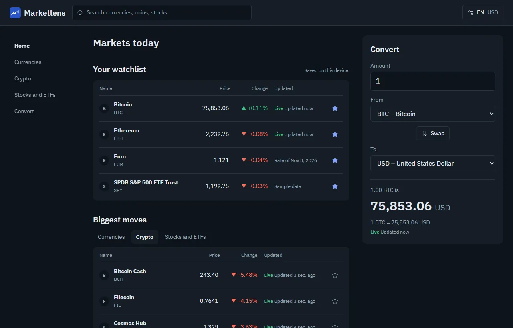
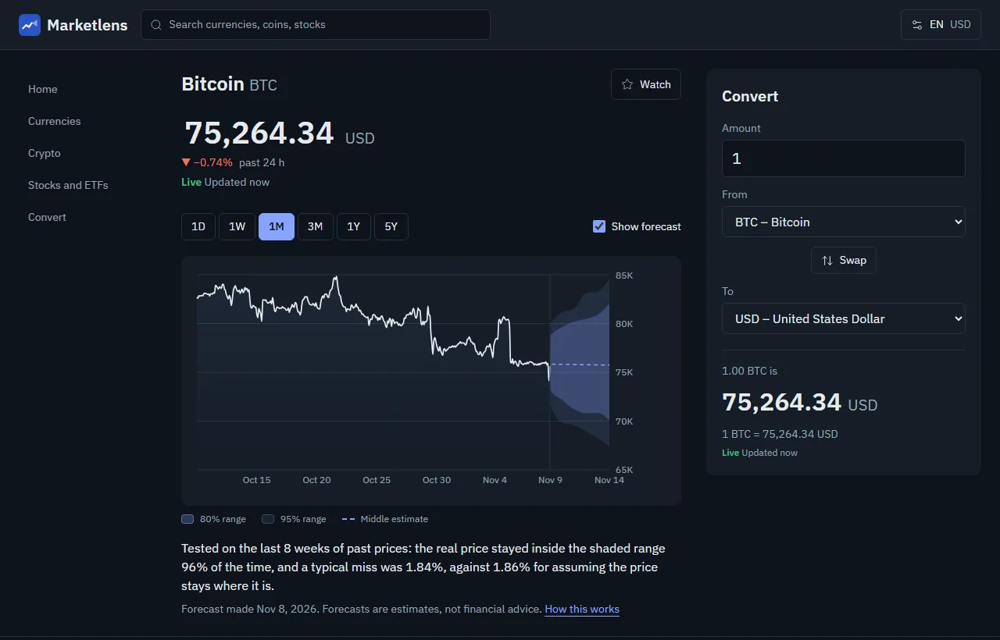

Marketlens
Prices for currencies, crypto and US stocks, conversion between any two of them, history charts, and seven-day forecast ranges that publish how often they were right.
- 161currencies
- 31cryptocurrencies
- 50US stocks and ETFs
- Live data
- Crypto updates every second, pushed to every viewer over SignalR
- Forecasts
- Python service; each range is back-tested against the last 8 weeks
- Quality
- Tests in every part, run by GitHub Actions; 7 written architecture decisions
React · TypeScript · ASP.NET Core 10 · PostgreSQL · Python · Docker
View on GitHub